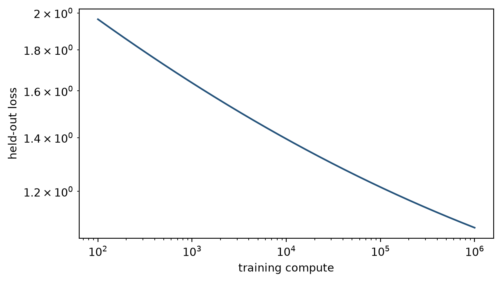

Empirical loss curves, compute allocation, and limits to extrapolation
Chapter orientation
Scaling laws summarise empirical relations between model size, training data, compute, and a measured loss. They are fitted regularities over stated model families and ranges, not guarantees that every capability or deployment outcome changes by the same rule. This chapter treats a scaling curve as an evaluative object: specify the data, objective, architecture, compute accounting, and held-out measure before extrapolating it.
Scaling law. A fitted empirical relation between declared resource inputs and a measured outcome over a stated model family and range. It supports conditional allocation decisions, not a universal capability claim.
Level 1 - More resources can change a measured loss
Holding a training recipe broadly comparable, larger models or more data often reduce held-out loss with diminishing returns. The practical question is allocation: whether another unit of compute should be spent on parameters, tokens, optimisation, or inference. A curve can inform that decision only for the distribution and training family from which it was estimated.
Code
import numpy as npimport matplotlib.pyplot as pltcompute=np.logspace(2,6,30); loss=2.3*compute**-.13+.7fig,ax=plt.subplots(figsize=(6.5,3.7));ax.loglog(compute,loss,color="#24527a");ax.set_xlabel("training compute");ax.set_ylabel("held-out loss");plt.tight_layout();plt.show()

Figure 48.1: A fitted scaling curve describes declining held-out loss over a declared range of compute, with smaller marginal gains at larger budgets.
Level 2 - The fitted relation has a contract
A simple form is (L(C)=aC^{-b}+c), where (L) is a chosen loss and (C) is a declared compute measure. The exponent is estimated from observations; it is not supplied by the equation. Changing tokenisation, data quality, architecture, optimiser, or evaluation distribution can change the fitted curve. Kaplan and colleagues reported such empirical relationships for language models (Kaplan et al. 2020), while later compute-optimal analysis changed the recommended balance between parameters and training tokens (Hoffmann et al. 2022).
Fitting starts with repeated runs at deliberately varied budgets. For every run, retain the model family, parameter count, FLOP convention, training tokens, batch and sequence length, optimiser and schedule, checkpoint rule, and held-out evaluation. Plot the observed points before fitting a line. A regular-looking curve can be driven by one failed run, a changed data source, or an excluded small model. Residuals and uncertainty intervals are evidence about the fitted relation, not decorative additions.
Figure 48.2: A fixed compute budget requires an allocation across model parameters and training tokens; different allocations can have different measured loss.
Level 3 - Compute accounting and capability tests
Training compute should distinguish model FLOPs, data-processing cost, failed runs, communication, and evaluation where those affect the claimed comparison. Inference compute belongs in a separate record: Chapters 36-41 show that additional sampling and search can change task performance without changing pretraining. A falling average loss also does not establish a particular capability, calibration property, or safety outcome; test each claim on a held-out task.
Allocation studies require comparable stopping criteria. A larger model trained on too few tokens and a smaller model trained longer may have the same nominal compute but different optimisation states. State the token count, number of updates, sequence length, batch policy, learning-rate schedule, and checkpoint-selection rule. Without these fields, a compute-optimal conclusion can instead reflect an unreported training mismatch.
Data is another limiting input. Repeating low-quality or duplicated data changes the effective information available to a model and may contaminate evaluation. A scaling plan should therefore give a data-mixture and deduplication record alongside parameter and FLOP counts.
Compute-optimal does not mean cost-optimal for every organisation. A larger model may have attractive training loss but fail a serving-memory or latency budget. A smaller model may be preferable once fine-tuning, retrieval, distillation, quantisation, or inference-time search are included. The allocation decision should define the target workload and total lifecycle cost, then compare candidate systems under that workload rather than select a parameter count from a pretraining curve alone.
Allocation is a constrained decision
Start with a fixed budget and a declared objective. A research run may prioritise held-out loss; a service may require a maximum latency, a memory limit, a language mix, or an evaluation threshold for a particular task. Generate candidate allocations over parameters, tokens, steps, sequence length, and data cleaning. Train enough points to identify whether the proposed optimum is stable. Then test the selected allocation with the intended adaptation and serving configuration. A pretraining-only comparison cannot settle a deployment allocation.
Token count also has a quality dimension. Tokens from a duplicated, narrow, or poorly documented mixture do not provide the same evidence as tokens from a broader, curated mixture. Report source categories, language and domain proportions, filtering, deduplication method, cutoff dates, and known gaps. This record makes clear whether a scaling gain came from more computation, a changed data distribution, or both.
Code
candidates=[{"parameters":"small","tokens":"high","loss":1.18,"p95_ms":45},{"parameters":"large","tokens":"medium","loss":1.12,"p95_ms":180}]for candidate in candidates: print(candidate)
Figure 48.3: A scaling report separates parameter count, training tokens, optimisation compute, communication, evaluation, and inference budgets.
Level 4 - Extrapolation and systems limits
Extrapolation is weakest where the model family, data mixture, hardware, objective, or target metric changes. A smooth loss curve can coexist with discontinuous operational constraints: memory capacity, communication topology, data availability, licensing, latency, and evaluation saturation. Report uncertainty around fitted exponents, the range used for fitting, excluded runs, and the decision that the extrapolation is intended to support.
Use extrapolation as a budgeting hypothesis, then test the first system outside the fitted range. A useful report states the predicted value, observed value, error, changed assumptions, and decision consequence. This prevents a fitted line from becoming an unexamined justification for a much larger training or deployment commitment.
Capability claims need an additional design. Define the task population before scaling, keep evaluation independent of model selection where possible, report uncertainty and slices, and compare observed task change with loss change. If a task score rises sharply, saturates, or falls while loss declines smoothly, that pattern identifies a limit of using aggregate loss as a proxy for the task.
Scaling plans need stopping rules
A scaling programme should state the result that would change its next investment. Examples include a fitted exponent becoming unstable across data mixtures, a held-out capability target failing to improve, a hardware limit increasing cost faster than projected, or an independent evaluation revealing contamination. These are not failures of the curve; they are evidence that the original allocation or extrapolation should be revised.
Keep a decision log for each scale transition: predicted loss or task change, observed result, variance across seeds or slices, altered assumptions, total cost, and the next decision. This permits later review of whether a large run followed evidence or simply continued a smooth trend beyond the conditions where it was measured.
What a scaling experiment estimates
A scaling experiment does not observe an abstract relation between intelligence and resources. It observes the outcomes of a particular family of training runs. The family includes an architecture, tokenizer, data pipeline, optimiser, curriculum, sequence length, precision policy, checkpoint criterion, and held-out loss. If several of those components change as compute increases, the fitted relation describes the bundled programme rather than parameter or token scaling alone.
This is why a run table should precede a fitted exponent. For every point, report the random seed, parameter accounting convention, active versus total parameters where sparse models are used, training and validation token counts, source mixture, update count, batch size, learning-rate schedule, precision, hardware, wall-clock time, and any restart or exclusion. If a point failed, record the failure and its cause. Removing divergent or undertrained runs can be appropriate, but a reader needs to see the rule used to remove them.
Code
run_table=[ {"params_m":120,"tokens_b":3,"updates_k":45,"loss":1.84,"status":"complete"}, {"params_m":360,"tokens_b":9,"updates_k":90,"loss":1.54,"status":"complete"}, {"params_m":1000,"tokens_b":18,"updates_k":120,"loss":1.37,"status":"complete"}, {"params_m":3000,"tokens_b":18,"updates_k":70,"loss":None,"status":"unstable"},]for run in run_table: print(run)
Fit uncertainty is part of the allocation decision
A small set of run points can support several plausible fitted relations. The uncertainty is larger when each larger model is also trained on more tokens, uses a revised data mixture, or receives a different optimisation schedule. In that setting, the points do not identify the separate contribution of parameters, data, and training procedure. A reported exponent may still describe the observed programme, but it cannot justify a claim about one input in isolation.
Repeat selected allocations across seeds, retain intermediate checkpoints, and compare fits that differ in the stated assumptions about the loss floor or functional form. The practical output is a range of predicted losses and a ranking of candidate allocations, not a single apparently precise exponent. If two allocations overlap within observed variation, the next decision can depend on serving cost, data coverage, or an independent task result. A larger training run is warranted when the expected decision-relevant difference exceeds that uncertainty, rather than because a fitted line has been extended by one more point.
Loss measurement must remain comparable
Held-out cross-entropy is useful because it evaluates the same predictive objective used in training, but it depends on tokenisation, target masking, context length, and data distribution. A change in vocabulary can change the unit over which loss is averaged. A new validation mixture can change the difficulty of the measured task. A benchmark may also overlap with training data or be used repeatedly for model selection. Report these details before interpreting a lower number as a broad model improvement.
Perplexity is an exponentiated loss and is often easier to describe, but it inherits the same boundaries. Neither measure establishes factuality, calibration, retrieval quality, arithmetic performance, security, or a particular user outcome. Add task-specific tests only after defining the task population and scoring rule. This protects against a common error: interpreting a smooth average loss curve as direct evidence that every capability or risk moves smoothly with compute.
Parameter, token, and optimisation budgets interact
For a given compute budget, increasing model size reduces the number of tokens or updates that can be processed under a fixed schedule. Increasing token count can leave too little capacity for the data’s structure. The useful allocation is an empirical question. Construct candidate grids that span undertrained large models, adequately trained middle models, and smaller models trained on more tokens. Fit only after checking that all candidates receive viable optimisation and that the comparison uses a common stopping rule.
The terms “undertrained” and “overtrained” should be tied to evidence rather than intuition. Inspect training and validation curves, token-to-parameter ratios, learning-rate state, and task regressions. A model that has seen many tokens can still be poorly trained if optimisation was unstable or data quality changed. Conversely, a model that has seen fewer tokens may satisfy the intended deployment trade-off. The run record permits these distinctions.
Data quality changes the scaling input
Token counts are often reported with a precision that the underlying data record cannot support. Text may be duplicated across sources, translated versions may be near duplicates, documents may be truncated, and source proportions may change over time. Data cleaning can improve a measured loss at the same nominal token count; it can also narrow language or domain coverage. Treat data mixture as an allocation dimension alongside parameters and FLOPs.
Maintain source, licence, language, domain, date, deduplication, and quality-filtering records. Test scaling curves on separate validation slices to see whether the observed gain is concentrated in one source type. If a larger run improves an aggregate loss while degrading a low-resource language or long-context slice, the allocation decision should state that trade-off. It is not enough to report the mean.
Code
slices={"general web":1.21,"technical":1.34,"long context":1.59,"low-resource language":1.72}for name,loss in slices.items(): print(name,loss)
general web 1.21
technical 1.34
long context 1.59
low-resource language 1.72
Compute has a physical and organisational boundary
FLOP estimates abstract away memory limits, communication, failed jobs, data movement, cooling, procurement, and the availability of qualified staff. They remain useful for normalising certain training comparisons, but a project budget should retain those omitted costs. Sparse models may have high total parameter capacity and lower active computation while requiring communication that changes throughput. Long-context models can change activation memory and attention cost. Precision changes both numerical behaviour and hardware performance.
Organisational constraints can be decisive before a theoretical compute optimum is reached. A team may have a fixed cluster reservation, a data-access agreement that expires, an evaluation requirement, or a deployment deadline. Report these boundaries as constraints on the decision, not as unexplained deviations from an ideal scaling curve. This makes a plan auditable and permits another team to apply the evidence under its own constraints.
Extrapolation has a range and an error
Interpolation uses observed points within the range of the experiment. Extrapolation predicts beyond that range. The second claim is usually more valuable for planning and less directly supported by evidence. A power-law fit can appear stable over several orders of magnitude and then change when the data mixture, architecture, optimiser, hardware, or loss floor changes. The uncertainty is not eliminated by reporting more decimal places in the exponent.
An extrapolation report should name the lowest and highest observed budget, the proposed new budget, the prediction interval, and the assumptions that must remain fixed. It should also identify the first evidence that would cause the plan to stop or change: a larger residual than expected, a failure to reach an optimisation threshold, a data shortage, a serving constraint, or an independent capability regression. This turns extrapolation into a testable planning hypothesis.
Code
forecast={"observed_compute_range":"1e18–1e21 FLOPs","proposed":"3e21 FLOPs","predicted_loss":1.18,"acceptable_error":.04,"stop_if":"held-out loss exceeds 1.22"}print(forecast)
Suppose a model family is evaluated on document extraction, code generation, multilingual retrieval, or reasoning with a verifier. Each task has its own population, prompt or interface, scoring rule, and failure cost. Plot task performance against the same training budget, but do not assume the curve follows the loss exponent. A task may show a threshold-like change, saturate early, depend heavily on prompt policy, or be limited by missing context rather than model capacity.
Use fixed and refreshed evaluation sets. Fixed sets permit comparison across checkpoints but can become development resources or be contaminated. Refreshed tasks test transfer but require a documented generator or sampling frame. Record both where possible. Analyse errors by task slice and inspect the cases that change between scale levels. The aim is to identify what additional compute changed in the model’s observed behaviour, not to attach a broad capability label to one score.
Code
capability_curve=[ {"compute":1,"loss":1.72,"structured_extraction":.51,"multilingual_retrieval":.42}, {"compute":3,"loss":1.49,"structured_extraction":.62,"multilingual_retrieval":.44}, {"compute":10,"loss":1.32,"structured_extraction":.71,"multilingual_retrieval":.50},]for point in capability_curve: print(point)
Training compute and inference compute are complementary budgets
Part V established that candidate sampling, search, verification, and refinement can improve a system’s task outcome after training. A scaling decision should therefore compare at least two routes: spend more on pretraining to change the base policy, or retain a smaller base model and spend more computation per request. The relevant comparison depends on request volume, latency, task distribution, verifier availability, and the cost of a wrong answer.
For example, a high-volume routine classification service may benefit from an efficient model with low per-request cost. A low-volume, verifiable reasoning task may justify several candidates and an exact checker. Report training cost separately from average serving cost, and state the assumed request volume used to amortise training. A training scaling law alone cannot choose between these system designs.
Scale programmes require governance and reproducibility
Large runs consume shared resources and may change the risks of data exposure, environmental impact, supplier dependency, and deployment concentration. A scale programme should assign an owner for the budget, data access, evaluation protocol, incident response, and go/no-go decision. The owner needs predeclared decision criteria, not only a dashboard of training loss.
Reproducibility does not require another team to own identical hardware. It requires enough information to understand what was done and test the material claims: code version, configuration, random seeds where feasible, data description and access restrictions, compute accounting, checkpoint-selection rule, evaluation suite, and known deviations from plan. If a result cannot be reproduced because data or hardware are unavailable, say which parts are independently checkable and which are not.
A bounded conclusion from a scaling study
A defensible conclusion may state that, for a named architecture and data mixture, increasing training tokens and parameters within the observed range reduced a specified held-out loss and improved a named task slice at a measured cost. It should separately state whether the selected allocation met serving constraints and whether an extrapolation beyond the observed range remains untested. This is sufficient to inform a real decision without claiming a universal law.
The next chapter uses this same discipline at serving time. Throughput, latency, cache pressure, and monitoring signals are empirical properties of a declared deployment configuration. They cannot be derived from parameter count or training FLOPs alone.
Designing a small scaling study
An educational scaling study can use a modest model family and a controlled corpus. Choose two or three parameter sizes, two token budgets, and a common optimiser policy. Hold tokenisation, validation data, sequence length, and evaluation code fixed. Train enough seeds to show whether differences exceed run-to-run variation. Plot training and validation loss, then report a task score only for a predeclared held-out task. The point is not to recover a frontier exponent; it is to learn how many assumptions sit behind a curve.
The study should include a deliberately mismatched allocation. A large model trained on too little data or stopped too early illustrates why parameter count alone is not a result. A smaller model trained longer can illustrate the opposite trade-off. Record the actual tokens and updates rather than describing one run as “larger” and the other as “smaller”. Readers should be able to identify the allocation, not infer it from a graph legend.
Code
study_design={"sizes_m":[30,90,270],"tokens_m":[60,180],"seeds":[1,2],"held_fixed":["tokenizer","validation set","sequence length","optimizer family"],"outcome":"validation loss plus predeclared task score"}print(study_design)
An apparent break can be an important finding, but first check mundane causes. Confirm that the tokenizer and loss implementation did not change, that the validation set was identical, that token counts use the same convention, and that the larger run reached a comparable optimisation state. Inspect hardware errors, loss scaling, gradient norms, checkpoint recovery, and data-pipeline logs. If the break remains after these checks, compare error slices and component changes before attributing it to a capability transition.
The same caution applies to a sudden task improvement. A benchmark may have a formatting shortcut, a few easy items, or a score that is sensitive to one decoding setting. Repeat with alternative prompts, seeds, and independently generated variants. If the improvement survives, describe the conditions under which it was observed and the mechanisms that remain uncertain. A careful conditional claim is stronger than a dramatic inference from one curve.
Reporting a scaling decision
The final report should answer five questions. What was varied? What was held fixed? How was compute and data counted? What changed on independent outcomes? What decision follows under a stated budget? A compact table can answer these questions more clearly than a single plotted exponent. Include the observed range, uncertainty, exclusions, resource cost, deployment assumptions, and the next test required before further scale.
This reporting standard also permits negative results. If a larger run did not improve the task that motivated it, report the loss, task, data, and systems evidence together. The outcome may indicate that the task needs better retrieval, a different training objective, more representative data, or an inference-time procedure rather than another increase in model scale. The relevant response follows from the diagnosed constraint.
Limits of a scaling-law account
Scaling evidence is useful when it narrows a decision under conditions that can be described and revisited. It becomes misleading when an exponent is detached from its data, objective, evaluation, and systems boundary. Models are trained and served through coupled technical and organisational systems. A measured curve can guide the next experiment, but it cannot relieve the team of testing the next configuration, inspecting distributional consequences, or deciding whether the resulting system is appropriate for its intended users.
For that reason, retain the configuration, outcome, and decision record for every material scale transition. The record makes later correction possible when evidence, costs, or user needs change.
It also prevents retrospective stories in which every scale increase is described as inevitable. A documented alternative allocation, a negative result, and a stated stopping rule are evidence of a disciplined programme rather than signs that the programme failed to scale.
They preserve the conditions under which later teams can reassess the decision honestly.
Figure 48.4: Observed scaling data support interpolation within a measured range more directly than extrapolation beyond changed data, hardware, or model conditions.
Figure 48.5: A loss improvement and a task capability result are related empirical measurements, not interchangeable claims.
Exercises
Define a scaling-law outcome and its compute denominator.
Fit a line to supplied log-compute and log-loss values.
Explain why the fitted exponent is not universal.
Compare parameter and token allocations under a fixed budget.
List compute sources excluded by a model-FLOP estimate.
Define a held-out capability test.
State an extrapolation boundary.
Design a data-mixture sensitivity check.
Explain why inference compute is separate.
Report uncertainty for a fitted curve.
Identify a hardware discontinuity.
State one licensing constraint on scaling.
Compare interpolation and extrapolation claims.
Design a calibration test alongside loss.
Specify fields in a scaling record.
Identify the next chapter’s serving question.
Summary
Scaling laws describe measured relations under a training contract. They can inform compute allocation, but they do not replace capability evaluation or systems accounting.
Looking ahead
Training curves do not determine whether a model can serve users within a latency, throughput, reliability, or cost target. Chapter 48 treats deployment as an operational system whose behaviour must be measured after the model leaves training.
Further reading
Empirical language-model scaling laws are reported by Kaplan et al. (2020); compute-optimal token and parameter allocation is reconsidered by Hoffmann et al. (2022).
Hoffmann, Jordan, Sebastian Borgeaud, Arthur Mensch, et al. 2022. “Training Compute-Optimal Large Language Models.”arXiv Preprint arXiv:2203.15556. https://arxiv.org/abs/2203.15556.
Kaplan, Jared, Sam McCandlish, Tom Henighan, et al. 2020. “Scaling Laws for Neural Language Models.”arXiv Preprint arXiv:2001.08361. https://arxiv.org/abs/2001.08361.
Source Code
---title: "Scaling Laws and Compute"subtitle: "Empirical loss curves, compute allocation, and limits to extrapolation"---## Chapter orientationScaling laws summarise empirical relations between model size, training data, compute, and a measured loss. They are fitted regularities over stated model families and ranges, not guarantees that every capability or deployment outcome changes by the same rule. This chapter treats a scaling curve as an evaluative object: specify the data, objective, architecture, compute accounting, and held-out measure before extrapolating it.::: {.concept-box .concept-core #concept-scaling-law data-term="Scaling law" data-domain="Modern AI systems"}**Scaling law.** A fitted empirical relation between declared resource inputs and a measured outcome over a stated model family and range. It supports conditional allocation decisions, not a universal capability claim.:::## Level 1 - More resources can change a measured lossHolding a training recipe broadly comparable, larger models or more data often reduce held-out loss with diminishing returns. The practical question is allocation: whether another unit of compute should be spent on parameters, tokens, optimisation, or inference. A curve can inform that decision only for the distribution and training family from which it was estimated.```{python}#| label: fig-power-law#| fig-cap: "A fitted scaling curve describes declining held-out loss over a declared range of compute, with smaller marginal gains at larger budgets."#| fig-alt: "A log-log line shows illustrative held-out loss falling as training compute rises."import numpy as npimport matplotlib.pyplot as pltcompute=np.logspace(2,6,30); loss=2.3*compute**-.13+.7fig,ax=plt.subplots(figsize=(6.5,3.7));ax.loglog(compute,loss,color="#24527a");ax.set_xlabel("training compute");ax.set_ylabel("held-out loss");plt.tight_layout();plt.show()```## Level 2 - The fitted relation has a contractA simple form is (L(C)=aC^{-b}+c), where (L) is a chosen loss and (C) is a declared compute measure. The exponent is estimated from observations; it is not supplied by the equation. Changing tokenisation, data quality, architecture, optimiser, or evaluation distribution can change the fitted curve. Kaplan and colleagues reported such empirical relationships for language models [@kaplan2020scaling], while later compute-optimal analysis changed the recommended balance between parameters and training tokens [@hoffmann2022chinchilla].Fitting starts with repeated runs at deliberately varied budgets. For every run, retain the model family, parameter count, FLOP convention, training tokens, batch and sequence length, optimiser and schedule, checkpoint rule, and held-out evaluation. Plot the observed points before fitting a line. A regular-looking curve can be driven by one failed run, a changed data source, or an excluded small model. Residuals and uncertainty intervals are evidence about the fitted relation, not decorative additions.```{python}log_compute=np.log(np.array([1e3,3e3,1e4,3e4])); log_loss=np.log(np.array([1.90,1.63,1.43,1.31]))slope,intercept=np.polyfit(log_compute,log_loss,1)print("estimated exponent:",round(slope,3),"residuals:",np.round(log_loss-(slope*log_compute+intercept),3))``````{python}#| label: fig-allocation-grid#| fig-cap: "A fixed compute budget requires an allocation across model parameters and training tokens; different allocations can have different measured loss."#| fig-alt: "A grid of parameter and token allocations highlights a low-loss region under an illustrative fixed budget."p=np.array([1,2,4,8]);t=np.array([1,2,4,8]);z=np.array([[1.8,1.5,1.4,1.5],[1.6,1.3,1.15,1.25],[1.5,1.18,1.05,1.16],[1.55,1.25,1.13,1.2]])fig,ax=plt.subplots(figsize=(5,4));im=ax.imshow(z,cmap="viridis");ax.set_xticks(range(4),t);ax.set_yticks(range(4),p);ax.set_xlabel("token allocation");ax.set_ylabel("parameter allocation");fig.colorbar(im,label="illustrative loss");plt.tight_layout();plt.show()```## Level 3 - Compute accounting and capability testsTraining compute should distinguish model FLOPs, data-processing cost, failed runs, communication, and evaluation where those affect the claimed comparison. Inference compute belongs in a separate record: Chapters 36-41 show that additional sampling and search can change task performance without changing pretraining. A falling average loss also does not establish a particular capability, calibration property, or safety outcome; test each claim on a held-out task.Allocation studies require comparable stopping criteria. A larger model trained on too few tokens and a smaller model trained longer may have the same nominal compute but different optimisation states. State the token count, number of updates, sequence length, batch policy, learning-rate schedule, and checkpoint-selection rule. Without these fields, a compute-optimal conclusion can instead reflect an unreported training mismatch.Data is another limiting input. Repeating low-quality or duplicated data changes the effective information available to a model and may contaminate evaluation. A scaling plan should therefore give a data-mixture and deduplication record alongside parameter and FLOP counts.Compute-optimal does not mean cost-optimal for every organisation. A larger model may have attractive training loss but fail a serving-memory or latency budget. A smaller model may be preferable once fine-tuning, retrieval, distillation, quantisation, or inference-time search are included. The allocation decision should define the target workload and total lifecycle cost, then compare candidate systems under that workload rather than select a parameter count from a pretraining curve alone.### Allocation is a constrained decisionStart with a fixed budget and a declared objective. A research run may prioritise held-out loss; a service may require a maximum latency, a memory limit, a language mix, or an evaluation threshold for a particular task. Generate candidate allocations over parameters, tokens, steps, sequence length, and data cleaning. Train enough points to identify whether the proposed optimum is stable. Then test the selected allocation with the intended adaptation and serving configuration. A pretraining-only comparison cannot settle a deployment allocation.Token count also has a quality dimension. Tokens from a duplicated, narrow, or poorly documented mixture do not provide the same evidence as tokens from a broader, curated mixture. Report source categories, language and domain proportions, filtering, deduplication method, cutoff dates, and known gaps. This record makes clear whether a scaling gain came from more computation, a changed data distribution, or both.```{python}candidates=[{"parameters":"small","tokens":"high","loss":1.18,"p95_ms":45},{"parameters":"large","tokens":"medium","loss":1.12,"p95_ms":180}]for candidate in candidates: print(candidate)``````{python}#| label: fig-compute-record#| fig-cap: "A scaling report separates parameter count, training tokens, optimisation compute, communication, evaluation, and inference budgets."#| fig-alt: "A stacked bar decomposes an illustrative project compute budget into training, communication, evaluation, and inference."fig,ax=plt.subplots(figsize=(6,3.6));ax.bar(["project"],[70],label="training",color="#24527a");ax.bar(["project"],[12],bottom=[70],label="communication",color="#7655a6");ax.bar(["project"],[8],bottom=[82],label="evaluation",color="#d97745");ax.bar(["project"],[10],bottom=[90],label="inference",color="#3a9188");ax.legend();ax.set_ylabel("illustrative compute share");plt.tight_layout();plt.show()```## Level 4 - Extrapolation and systems limitsExtrapolation is weakest where the model family, data mixture, hardware, objective, or target metric changes. A smooth loss curve can coexist with discontinuous operational constraints: memory capacity, communication topology, data availability, licensing, latency, and evaluation saturation. Report uncertainty around fitted exponents, the range used for fitting, excluded runs, and the decision that the extrapolation is intended to support.Use extrapolation as a budgeting hypothesis, then test the first system outside the fitted range. A useful report states the predicted value, observed value, error, changed assumptions, and decision consequence. This prevents a fitted line from becoming an unexamined justification for a much larger training or deployment commitment.Capability claims need an additional design. Define the task population before scaling, keep evaluation independent of model selection where possible, report uncertainty and slices, and compare observed task change with loss change. If a task score rises sharply, saturates, or falls while loss declines smoothly, that pattern identifies a limit of using aggregate loss as a proxy for the task.### Scaling plans need stopping rulesA scaling programme should state the result that would change its next investment. Examples include a fitted exponent becoming unstable across data mixtures, a held-out capability target failing to improve, a hardware limit increasing cost faster than projected, or an independent evaluation revealing contamination. These are not failures of the curve; they are evidence that the original allocation or extrapolation should be revised.Keep a decision log for each scale transition: predicted loss or task change, observed result, variance across seeds or slices, altered assumptions, total cost, and the next decision. This permits later review of whether a large run followed evidence or simply continued a smooth trend beyond the conditions where it was measured.### What a scaling experiment estimatesA scaling experiment does not observe an abstract relation between intelligence and resources. It observes the outcomes of a particular family of training runs. The family includes an architecture, tokenizer, data pipeline, optimiser, curriculum, sequence length, precision policy, checkpoint criterion, and held-out loss. If several of those components change as compute increases, the fitted relation describes the bundled programme rather than parameter or token scaling alone.This is why a run table should precede a fitted exponent. For every point, report the random seed, parameter accounting convention, active versus total parameters where sparse models are used, training and validation token counts, source mixture, update count, batch size, learning-rate schedule, precision, hardware, wall-clock time, and any restart or exclusion. If a point failed, record the failure and its cause. Removing divergent or undertrained runs can be appropriate, but a reader needs to see the rule used to remove them.```{python}run_table=[ {"params_m":120,"tokens_b":3,"updates_k":45,"loss":1.84,"status":"complete"}, {"params_m":360,"tokens_b":9,"updates_k":90,"loss":1.54,"status":"complete"}, {"params_m":1000,"tokens_b":18,"updates_k":120,"loss":1.37,"status":"complete"}, {"params_m":3000,"tokens_b":18,"updates_k":70,"loss":None,"status":"unstable"},]for run in run_table: print(run)```### Fit uncertainty is part of the allocation decisionA small set of run points can support several plausible fitted relations. The uncertainty is larger when each larger model is also trained on more tokens, uses a revised data mixture, or receives a different optimisation schedule. In that setting, the points do not identify the separate contribution of parameters, data, and training procedure. A reported exponent may still describe the observed programme, but it cannot justify a claim about one input in isolation.Repeat selected allocations across seeds, retain intermediate checkpoints, and compare fits that differ in the stated assumptions about the loss floor or functional form. The practical output is a range of predicted losses and a ranking of candidate allocations, not a single apparently precise exponent. If two allocations overlap within observed variation, the next decision can depend on serving cost, data coverage, or an independent task result. A larger training run is warranted when the expected decision-relevant difference exceeds that uncertainty, rather than because a fitted line has been extended by one more point.### Loss measurement must remain comparableHeld-out cross-entropy is useful because it evaluates the same predictive objective used in training, but it depends on tokenisation, target masking, context length, and data distribution. A change in vocabulary can change the unit over which loss is averaged. A new validation mixture can change the difficulty of the measured task. A benchmark may also overlap with training data or be used repeatedly for model selection. Report these details before interpreting a lower number as a broad model improvement.Perplexity is an exponentiated loss and is often easier to describe, but it inherits the same boundaries. Neither measure establishes factuality, calibration, retrieval quality, arithmetic performance, security, or a particular user outcome. Add task-specific tests only after defining the task population and scoring rule. This protects against a common error: interpreting a smooth average loss curve as direct evidence that every capability or risk moves smoothly with compute.### Parameter, token, and optimisation budgets interactFor a given compute budget, increasing model size reduces the number of tokens or updates that can be processed under a fixed schedule. Increasing token count can leave too little capacity for the data's structure. The useful allocation is an empirical question. Construct candidate grids that span undertrained large models, adequately trained middle models, and smaller models trained on more tokens. Fit only after checking that all candidates receive viable optimisation and that the comparison uses a common stopping rule.The terms “undertrained” and “overtrained” should be tied to evidence rather than intuition. Inspect training and validation curves, token-to-parameter ratios, learning-rate state, and task regressions. A model that has seen many tokens can still be poorly trained if optimisation was unstable or data quality changed. Conversely, a model that has seen fewer tokens may satisfy the intended deployment trade-off. The run record permits these distinctions.### Data quality changes the scaling inputToken counts are often reported with a precision that the underlying data record cannot support. Text may be duplicated across sources, translated versions may be near duplicates, documents may be truncated, and source proportions may change over time. Data cleaning can improve a measured loss at the same nominal token count; it can also narrow language or domain coverage. Treat data mixture as an allocation dimension alongside parameters and FLOPs.Maintain source, licence, language, domain, date, deduplication, and quality-filtering records. Test scaling curves on separate validation slices to see whether the observed gain is concentrated in one source type. If a larger run improves an aggregate loss while degrading a low-resource language or long-context slice, the allocation decision should state that trade-off. It is not enough to report the mean.```{python}slices={"general web":1.21,"technical":1.34,"long context":1.59,"low-resource language":1.72}for name,loss in slices.items(): print(name,loss)```### Compute has a physical and organisational boundaryFLOP estimates abstract away memory limits, communication, failed jobs, data movement, cooling, procurement, and the availability of qualified staff. They remain useful for normalising certain training comparisons, but a project budget should retain those omitted costs. Sparse models may have high total parameter capacity and lower active computation while requiring communication that changes throughput. Long-context models can change activation memory and attention cost. Precision changes both numerical behaviour and hardware performance.Organisational constraints can be decisive before a theoretical compute optimum is reached. A team may have a fixed cluster reservation, a data-access agreement that expires, an evaluation requirement, or a deployment deadline. Report these boundaries as constraints on the decision, not as unexplained deviations from an ideal scaling curve. This makes a plan auditable and permits another team to apply the evidence under its own constraints.### Extrapolation has a range and an errorInterpolation uses observed points within the range of the experiment. Extrapolation predicts beyond that range. The second claim is usually more valuable for planning and less directly supported by evidence. A power-law fit can appear stable over several orders of magnitude and then change when the data mixture, architecture, optimiser, hardware, or loss floor changes. The uncertainty is not eliminated by reporting more decimal places in the exponent.An extrapolation report should name the lowest and highest observed budget, the proposed new budget, the prediction interval, and the assumptions that must remain fixed. It should also identify the first evidence that would cause the plan to stop or change: a larger residual than expected, a failure to reach an optimisation threshold, a data shortage, a serving constraint, or an independent capability regression. This turns extrapolation into a testable planning hypothesis.```{python}forecast={"observed_compute_range":"1e18–1e21 FLOPs","proposed":"3e21 FLOPs","predicted_loss":1.18,"acceptable_error":.04,"stop_if":"held-out loss exceeds 1.22"}print(forecast)```### Capability tests have their own scaling curvesSuppose a model family is evaluated on document extraction, code generation, multilingual retrieval, or reasoning with a verifier. Each task has its own population, prompt or interface, scoring rule, and failure cost. Plot task performance against the same training budget, but do not assume the curve follows the loss exponent. A task may show a threshold-like change, saturate early, depend heavily on prompt policy, or be limited by missing context rather than model capacity.Use fixed and refreshed evaluation sets. Fixed sets permit comparison across checkpoints but can become development resources or be contaminated. Refreshed tasks test transfer but require a documented generator or sampling frame. Record both where possible. Analyse errors by task slice and inspect the cases that change between scale levels. The aim is to identify what additional compute changed in the model's observed behaviour, not to attach a broad capability label to one score.```{python}capability_curve=[ {"compute":1,"loss":1.72,"structured_extraction":.51,"multilingual_retrieval":.42}, {"compute":3,"loss":1.49,"structured_extraction":.62,"multilingual_retrieval":.44}, {"compute":10,"loss":1.32,"structured_extraction":.71,"multilingual_retrieval":.50},]for point in capability_curve: print(point)```### Training compute and inference compute are complementary budgetsPart V established that candidate sampling, search, verification, and refinement can improve a system's task outcome after training. A scaling decision should therefore compare at least two routes: spend more on pretraining to change the base policy, or retain a smaller base model and spend more computation per request. The relevant comparison depends on request volume, latency, task distribution, verifier availability, and the cost of a wrong answer.For example, a high-volume routine classification service may benefit from an efficient model with low per-request cost. A low-volume, verifiable reasoning task may justify several candidates and an exact checker. Report training cost separately from average serving cost, and state the assumed request volume used to amortise training. A training scaling law alone cannot choose between these system designs.### Scale programmes require governance and reproducibilityLarge runs consume shared resources and may change the risks of data exposure, environmental impact, supplier dependency, and deployment concentration. A scale programme should assign an owner for the budget, data access, evaluation protocol, incident response, and go/no-go decision. The owner needs predeclared decision criteria, not only a dashboard of training loss.Reproducibility does not require another team to own identical hardware. It requires enough information to understand what was done and test the material claims: code version, configuration, random seeds where feasible, data description and access restrictions, compute accounting, checkpoint-selection rule, evaluation suite, and known deviations from plan. If a result cannot be reproduced because data or hardware are unavailable, say which parts are independently checkable and which are not.### A bounded conclusion from a scaling studyA defensible conclusion may state that, for a named architecture and data mixture, increasing training tokens and parameters within the observed range reduced a specified held-out loss and improved a named task slice at a measured cost. It should separately state whether the selected allocation met serving constraints and whether an extrapolation beyond the observed range remains untested. This is sufficient to inform a real decision without claiming a universal law.The next chapter uses this same discipline at serving time. Throughput, latency, cache pressure, and monitoring signals are empirical properties of a declared deployment configuration. They cannot be derived from parameter count or training FLOPs alone.### Designing a small scaling studyAn educational scaling study can use a modest model family and a controlled corpus. Choose two or three parameter sizes, two token budgets, and a common optimiser policy. Hold tokenisation, validation data, sequence length, and evaluation code fixed. Train enough seeds to show whether differences exceed run-to-run variation. Plot training and validation loss, then report a task score only for a predeclared held-out task. The point is not to recover a frontier exponent; it is to learn how many assumptions sit behind a curve.The study should include a deliberately mismatched allocation. A large model trained on too little data or stopped too early illustrates why parameter count alone is not a result. A smaller model trained longer can illustrate the opposite trade-off. Record the actual tokens and updates rather than describing one run as “larger” and the other as “smaller”. Readers should be able to identify the allocation, not infer it from a graph legend.```{python}study_design={"sizes_m":[30,90,270],"tokens_m":[60,180],"seeds":[1,2],"held_fixed":["tokenizer","validation set","sequence length","optimizer family"],"outcome":"validation loss plus predeclared task score"}print(study_design)```### Interpreting an apparent break in a curveAn apparent break can be an important finding, but first check mundane causes. Confirm that the tokenizer and loss implementation did not change, that the validation set was identical, that token counts use the same convention, and that the larger run reached a comparable optimisation state. Inspect hardware errors, loss scaling, gradient norms, checkpoint recovery, and data-pipeline logs. If the break remains after these checks, compare error slices and component changes before attributing it to a capability transition.The same caution applies to a sudden task improvement. A benchmark may have a formatting shortcut, a few easy items, or a score that is sensitive to one decoding setting. Repeat with alternative prompts, seeds, and independently generated variants. If the improvement survives, describe the conditions under which it was observed and the mechanisms that remain uncertain. A careful conditional claim is stronger than a dramatic inference from one curve.### Reporting a scaling decisionThe final report should answer five questions. What was varied? What was held fixed? How was compute and data counted? What changed on independent outcomes? What decision follows under a stated budget? A compact table can answer these questions more clearly than a single plotted exponent. Include the observed range, uncertainty, exclusions, resource cost, deployment assumptions, and the next test required before further scale.This reporting standard also permits negative results. If a larger run did not improve the task that motivated it, report the loss, task, data, and systems evidence together. The outcome may indicate that the task needs better retrieval, a different training objective, more representative data, or an inference-time procedure rather than another increase in model scale. The relevant response follows from the diagnosed constraint.### Limits of a scaling-law accountScaling evidence is useful when it narrows a decision under conditions that can be described and revisited. It becomes misleading when an exponent is detached from its data, objective, evaluation, and systems boundary. Models are trained and served through coupled technical and organisational systems. A measured curve can guide the next experiment, but it cannot relieve the team of testing the next configuration, inspecting distributional consequences, or deciding whether the resulting system is appropriate for its intended users.For that reason, retain the configuration, outcome, and decision record for every material scale transition. The record makes later correction possible when evidence, costs, or user needs change.It also prevents retrospective stories in which every scale increase is described as inevitable. A documented alternative allocation, a negative result, and a stated stopping rule are evidence of a disciplined programme rather than signs that the programme failed to scale.They preserve the conditions under which later teams can reassess the decision honestly.```{python}#| label: fig-extrapolation-boundary#| fig-cap: "Observed scaling data support interpolation within a measured range more directly than extrapolation beyond changed data, hardware, or model conditions."#| fig-alt: "A curve has solid points within an observed range and a dashed uncertain extension beyond it."x=np.arange(1,7);y=np.array([2,1.7,1.5,1.38,1.3,1.24]);fig,ax=plt.subplots(figsize=(6.5,3.5));ax.plot(x[:4],y[:4],marker="o",color="#24527a",label="observed");ax.plot(x[3:],y[3:],"--",color="#d97745",label="extrapolated");ax.legend();ax.set_xlabel("log compute level");ax.set_ylabel("loss");plt.tight_layout();plt.show()``````{python}#| label: fig-loss-capability#| fig-cap: "A loss improvement and a task capability result are related empirical measurements, not interchangeable claims."#| fig-alt: "Two separate lines show steadily lower loss and a task score that requires its own measurement."fig,ax=plt.subplots(figsize=(6.5,3.5));ax.plot([1,2,3,4],[1.8,1.5,1.35,1.25],label="loss",color="#24527a");ax.plot([1,2,3,4],[.42,.49,.55,.54],label="task score",color="#d97745");ax.legend();plt.tight_layout();plt.show()```## Exercises1. Define a scaling-law outcome and its compute denominator.2. Fit a line to supplied log-compute and log-loss values.3. Explain why the fitted exponent is not universal.4. Compare parameter and token allocations under a fixed budget.5. List compute sources excluded by a model-FLOP estimate.6. Define a held-out capability test.7. State an extrapolation boundary.8. Design a data-mixture sensitivity check.9. Explain why inference compute is separate.10. Report uncertainty for a fitted curve.11. Identify a hardware discontinuity.12. State one licensing constraint on scaling.13. Compare interpolation and extrapolation claims.14. Design a calibration test alongside loss.15. Specify fields in a scaling record.16. Identify the next chapter's serving question.## SummaryScaling laws describe measured relations under a training contract. They can inform compute allocation, but they do not replace capability evaluation or systems accounting.## Looking aheadTraining curves do not determine whether a model can serve users within a latency, throughput, reliability, or cost target. [Chapter 48](48-serving-deployment-monitoring.qmd) treats deployment as an operational system whose behaviour must be measured after the model leaves training.## Further readingEmpirical language-model scaling laws are reported by @kaplan2020scaling; compute-optimal token and parameter allocation is reconsidered by @hoffmann2022chinchilla.